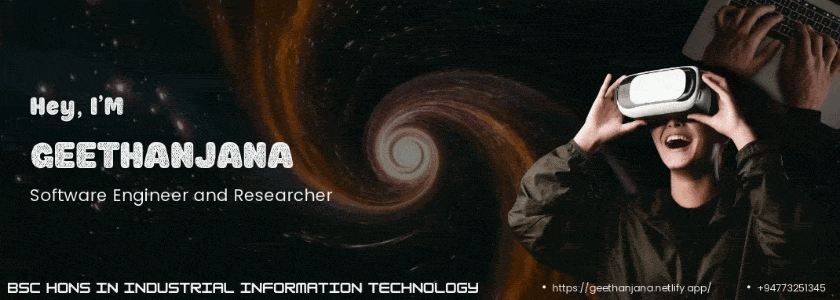
Full-stack thinking. Immersive possibilities.
Full-Stack Developer at Cogent Solutions
Software Engineering Undergraduate · BSc (Hons) in Industrial Information Technology
About / Experience / Technology / Projects / VR Research / Education / Connect
About
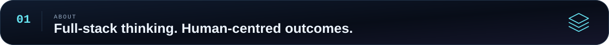
I’m Geethanjana, a developer who enjoys turning real-world problems into practical software. I build web applications, backend systems, and software products with a focus on clean architecture, maintainable code, and reliable user experiences.
My work connects modern web development with enterprise applications and cloud-based systems. Alongside development, I’m researching how Virtual Reality can make computer networking concepts more tangible through interactive simulations.
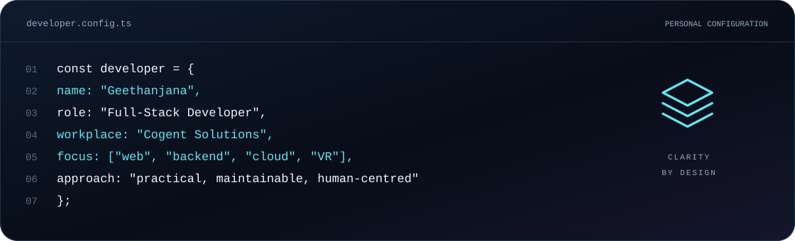
Currently building: web-based solutions for the event management industry with Next.js, PHP, and Python.
Experience I bring: enterprise application development with ASP.NET Core, React, TypeScript, Entity Framework Core, and Microsoft Azure.
Ideas I keep exploring: cloud computing, software architecture, scalable systems, and immersive learning experiences.
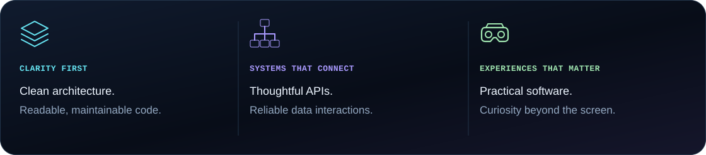
Experience
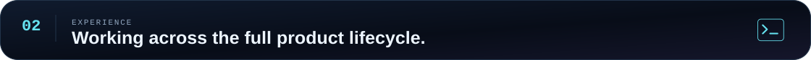
Full-Stack Developer · Cogent Solutions
Developing and maintaining web-based solutions for the event management industry, working across frontend interfaces, backend functionality, integrations, databases, and server-side systems.
| Area | My work |
|---|---|
| Frontend development | Building modern web interfaces with Next.js. |
| Backend development | Developing application functionality with PHP. |
| Python development | Working on application and data-related tasks. |
| Integrations | Connecting APIs, external services, and application workflows. |
| Data and infrastructure | Working with databases and server-side systems. |
| Product maintenance | Troubleshooting existing applications and improving reliability and usability. |
| Delivery | Contributing across the software development lifecycle. |
Previous experience / enterprise software and cloud-based systems
My previous work involved enterprise software built with ASP.NET Core, React, TypeScript, and Microsoft Azure, giving me experience across both application development and cloud-based systems.
That experience includes the TrueMarke electronic signature platform, with contributions spanning document workflows, PDF processing, audit logging, organization management, and enterprise administration.
Technology
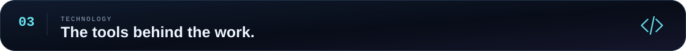
Frontend
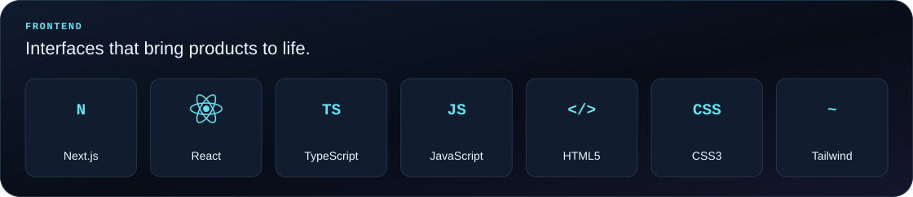
Backend
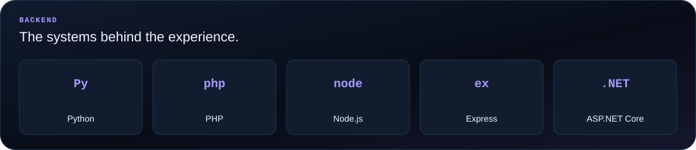
Databases
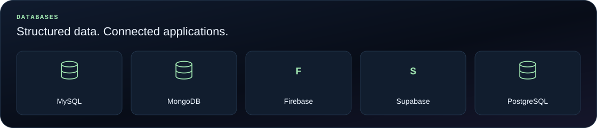
Cloud, DevOps & Tools
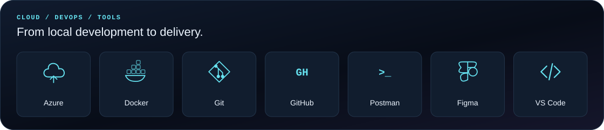
Immersive Technology & Application Foundations
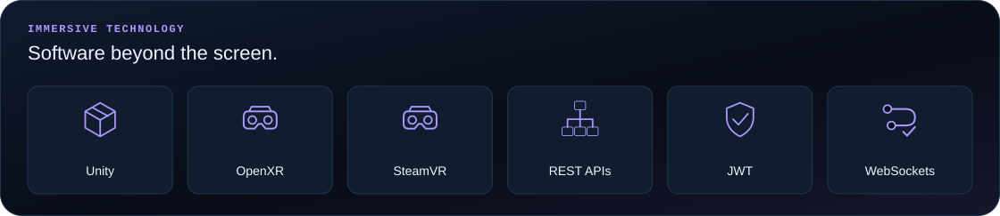
Mobile development: React Native Expo TypeScript
Application foundations: Entity Framework Core CRUD Role-based access control Responsive UI
Selected Projects
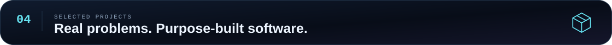
TrueMarke
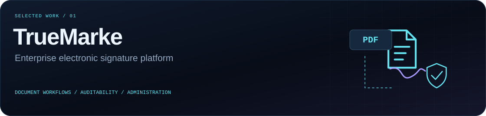
Enterprise Electronic Signature Platform
A production-level electronic signature platform designed for real-world business workflows. My contributions covered the document journey as well as the organization, monitoring, and administration features around it.
Core areas: electronic signing, PDF processing, document management, auditability, and enterprise administration.
Explore my contributions
| Capability | Contribution area |
|---|---|
| Electronic signing | Electronic document signing workflows. |
| Document handling | PDF processing and document management. |
| Auditability | Audit logging and compliance tracking. |
| Account administration | Organization and user management. |
| Activity visibility | Geolocation-based activity monitoring. |
| Signature records | Digital signature certificate generation. |
| Live monitoring | Real-time document monitoring. |
| Enterprise operations | Enterprise administration features. |
Stack
ASP.NET Core Entity Framework Core React TypeScript Microsoft Azure Tailwind CSS
WayPoint
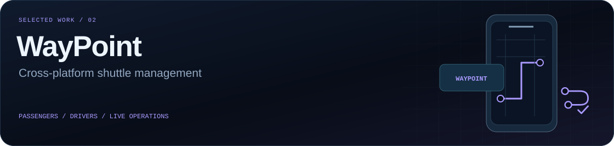
Shuttle Management System
A cross-platform transport management application designed for passengers, drivers, and administrators, bringing booking, trip management, and live shuttle visibility into one application experience.
Core areas: passenger booking, driver operations, real-time tracking, route mapping, and access validation.
Explore the feature set
| Experience | Features |
|---|---|
| Passenger journey | Passenger booking and real-time shuttle tracking. |
| Driver operations | Driver trip management and route mapping. |
| Access and validation | Role-based access control and QR-based validation. |
| Authentication | Biometric authentication. |
| Live connectivity | API and socket integrations. |
Stack
React Native TypeScript Node.js MongoDB Expo
CareSync
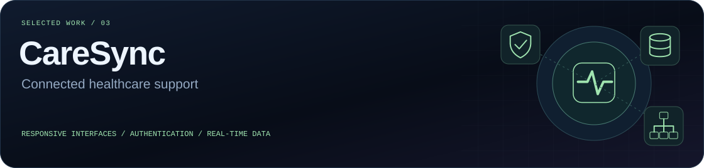
Healthcare Support System
A web-based healthcare support platform focused on responsive interfaces, secure authentication, and real-time data interaction.
Core areas: responsive interfaces across screen sizes, authenticated application access, and connected frontend and backend services.
Explore the technical focus
The application brings together a React interface, backend functionality using Node.js, Express, and Python, and a MySQL database. REST APIs support application communication, with JWT used for authentication.
Stack
React Node.js Express Python MySQL REST APIs JWT
VR Research
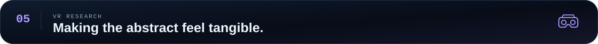
Virtual Reality for Computer Networking Education
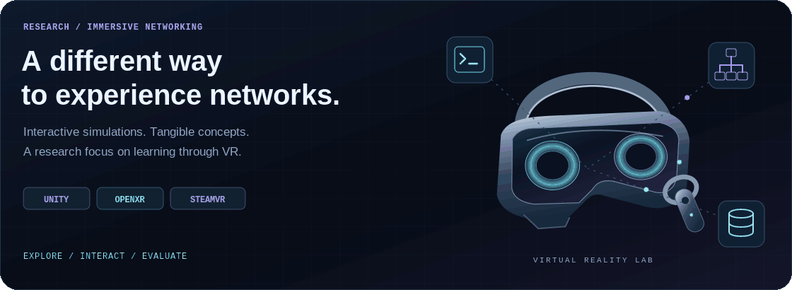
I’m currently researching the development and evaluation of an interactive Virtual Reality learning environment for basic computer networking concepts.
The project explores how immersive environments can support learning through interactive simulations, connecting software development with the design and evaluation of educational experiences.
| Research dimension | Focus |
|---|---|
| Subject area | Basic computer networking concepts. |
| Learning environment | An interactive Virtual Reality experience. |
| Approach | Immersive simulations that support exploration and interaction. |
| Research scope | Development and evaluation of the learning environment. |
Research technologies: Unity OpenXR SteamVR
The idea is to make networking concepts something learners can explore and interact with—not only something they read about.
Education
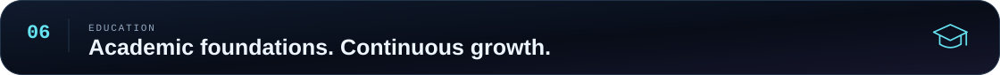
Uva Wellassa University of Sri Lanka
BSc (Hons) in Industrial Information Technology
2022 – 2026
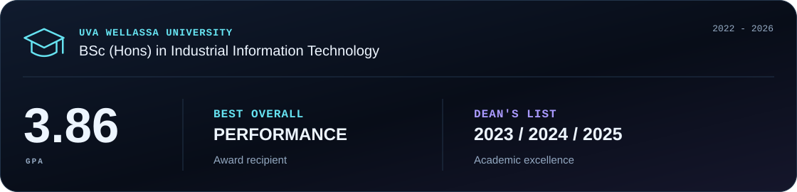
GPA: 3.86
Recognition: Best Overall Performance award recipient; Dean’s List for academic excellence in 2023, 2024, and 2025.
Beyond Development
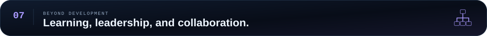
Certifications & Learning
| Learning area | Certification or course |
|---|---|
| Developer collaboration | GitHub Foundations |
| Containers and delivery | Docker Foundations Professional Certificate |
| Software delivery practices | Agile Software Development |
| Software quality | Test Automation Foundations |
Leadership & Activities
| Role | Initiative | Period |
|---|---|---|
| Project Chair | IEEE Wellassata AI | 2025 – 2026 |
| Virtual Reality Project Member | UWU Expo | 2025 |
| Mini Organizing Committee | INSL | 2024 |
GitHub
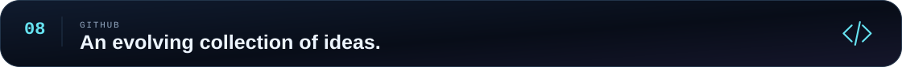
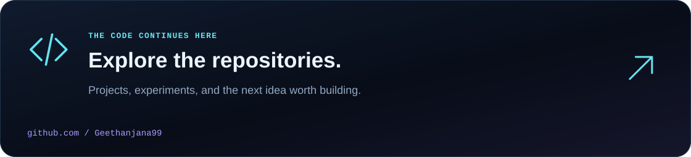
My repositories are another part of the story: software projects, technical experiments, and the work behind the interfaces.
Connect
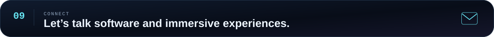
I enjoy conversations about full-stack development, backend systems, clean architecture, cloud computing, and Virtual Reality for education.
Have a project, a research idea, or a software problem worth exploring? Let’s connect.
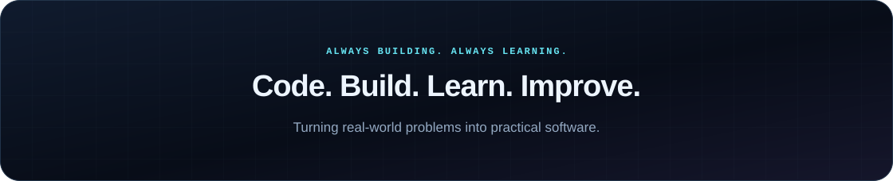